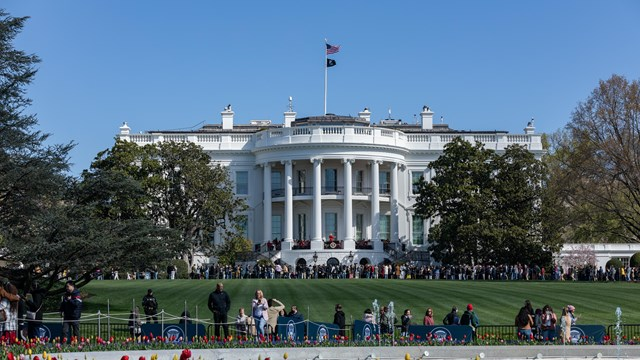
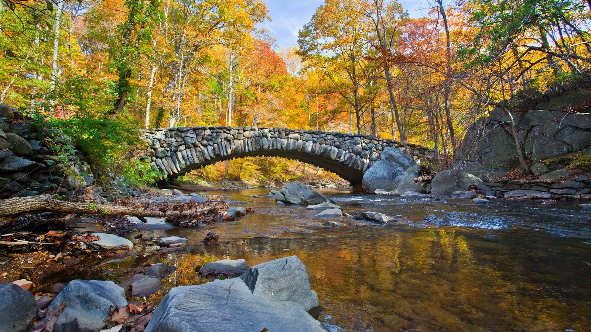

The city of Washington, DC, thrives on its distinctive fusion of innovation, culture, and history. Beyond famous monuments, DC offers hidden jewels, vibrant neighborhoods, and insider experiences. Explore this guide for a full immersion into the spirit of the nation's capital!
Historic Sites
The National Mall stretches over two miles and features iconic landmarks like the U.S. Capitol, Lincoln Memorial, and Washington Monument. Nearby, discover the serene Tidal Basin and beautiful Constitution Gardens.

Close to the Mall lies the White House and Lafayette Square. Though public tours require reservations, viewing from Pennsylvania Avenue offers a memorable experience. Don’t miss the National Archives to see the Constitution and Declaration of Independence.
Neighborhoods
Georgetown: Walk cobblestone streets, shop boutiques, explore the C&O Canal, and dine by the Potomac River. Perfect for a full day and evening adventure.
U Street Corridor: Known as "Black Broadway," U Street offers live jazz, street art, and delicious soul food. Don’t miss a visit to the historic Howard Theatre or Ben's Chili Bowl.
Eastern Market: Dive into local life at this Capitol Hill weekend market with fresh produce, handmade goods, and a charming neighborhood vibe.
Hidden Gems
Beyond the Smithsonian museums, explore unique spots like the Phillips Collection, National Postal Museum, and Hirshhorn Museum and Sculpture Garden. For architecture enthusiasts, the National Building Museum offers fantastic exhibits.

Nature lovers should visit Rock Creek Park for outdoor adventures or the Kenilworth Aquatic Gardens to see seasonal lotus blooms—a truly off-the-beaten-path experience.
Travel Tips
The Metrorail system is clean, efficient, and a great way to explore DC. Get a SmarTrip card for easy access and discounted fares. Comfortable shoes are essential for walking the National Mall!
DC's food scene has exploded, from food trucks to Michelin-starred dining. Reservations are recommended. Try local favorites like Shaw's Ethiopian restaurants and Maryland-style crab cakes.
Washington, DC is ready to welcome you with open arms. Whether you're interested in history, art, food, or new experiences, you'll find endless adventures waiting in the nation's capital.
About Me
I'm Julia, a travel enthusiast with a passion for exploring the world. Growing up in a culturally diverse family, I took my first international trip before I could even walk, and I’ve been hooked ever since. For me, travel is more than just a getaway; it’s therapy. I cherish every experience, from savoring new cuisines to meeting amazing people and learning something new with every journey. I’ve turned this love into a space where I can share my adventures, tips, travel essentials, and everything I’ve learned along the way. I can’t wait for us to explore together!
It’s no secret—I’ve always loved to travel. Over the years, my passion has only grown with each new adventure. Helping friends and family plan their trips, offering itinerary advice, and sharing travel tips has always been a hobby of mine. Now, I’m excited to bring that same energy to a wider community! My goal is to create a go-to hub where you can learn from my experiences, avoid the common travel pitfalls I’ve encountered, and find inspiration for your own adventures.
Whether you’re looking for travel tips, curated itineraries, or personal concierge services, I’m here to make your journey as smooth and enjoyable as possible. Simply submit a questionnaire about your desired trip, and I’ll craft a tailored itinerary or accommodation plan to suit your needs. Travel is my passion, and I’m thrilled to help fellow travelers make the most of their adventures. Enjoy your time in D.C., and I hope you have just as much fun as I have.